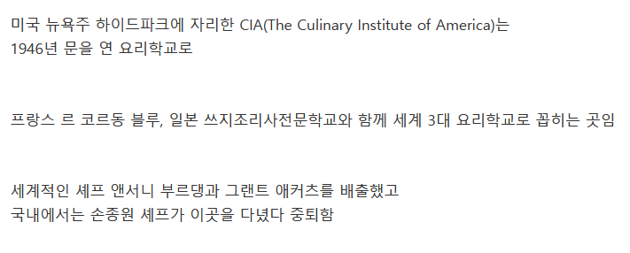
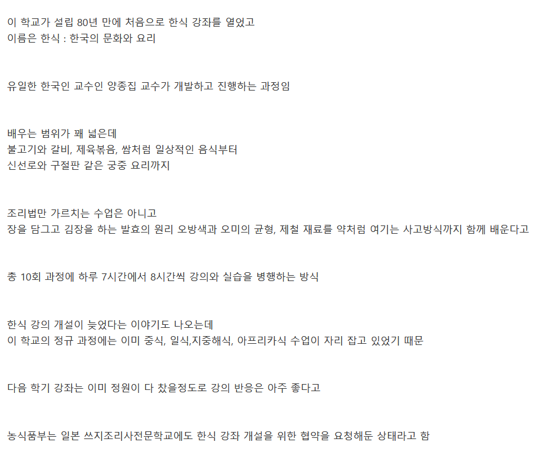

https://cafe.daum.net/ssaumjil/LnOm/3385819?svc=cafeapi


https://cafe.daum.net/ssaumjil/LnOm/3385819?svc=cafeapi


김! 구! 선! 생! 님!
ㅇㅅㅇ?
한식 최고
고만하라고! 시발 식자재값 비싸진다고!
그놈의 3대 ㅇㅇㅇ 이거는 대체 어디서부터 시작한거임
일본 학교 들어가있는거보니 일본에서 시작한거 같긴 한데
근데 유명한 요리학원이긴 함
7대불가사의에서 유래된거라 기원전까지 거슬러 올라가야함
동양 쪽이 이런거 좋아하니 아마 일본이 시작한게 맞을거야
유럽은 이탈리아 alma를 치지 저기 이야기 안하거든
여튼 cia가 큰 요리학교인건 맞지
그리고 세계 몇 대 이런건 무조건 거르는게 좋음 역사든 요리든 뭐든
우리는 모두 역대 최고 누구 이런거 좋아하지
원피스 3대장도 어디서 시작한거냐?
일본에서 만든 만화인거보니 일본에서 시작한거 같긴 한데
본인 츠지 출신인데 학교에서 맨날 3대 학교 3대학교 광고하긴 함ㅋㅋ
제목만보고 첩보의별 얘기인줄 알았는데 이왜진
ㄹㅇ 감개무량하구나
글로벌한 빌런과 히어로들을 만나게 될 것이야
브로콜리 김치전, 케일 김치찜, 아스파라거스 김치찌개
파인애플김치전, 망고김치보쌈, 청경채김치전
나쁘지않은데
생크림 김치찌개
홍어 스테이크
막상 잘 끓이면 괜찮을지도
https://www.mokpo.go.kr/tour/food_100/recipe?idx=457715&mode=view
넌 홍어에 대해 너무 나약하게 봤어. 홍어 스테이크는 목포 시청의 공식 목포 문화 관광 집에 나와있다는 사실을 알고 있는가?
그리고 생크림 김치찌개 또한 유튜브에서 유행했었음 1분 뚝딱이형에서 올라올 정도로 ㅋㅋㅋㅋ
홍어 스테이크, 안삭히고 구우면 소금후추 간 해서 버터에 잘 지지면 개맛있을것같은데?
"삼겹살 나물"
& 와사비 김치
+ 각종 요리에 알맞는
김치와 나물류가 글로벌하게 등장하면 좋겠음
스프, 국물, 고기 관련 음식들과 거기에 어울리는 반찬으로.
스테이크 먹는데 김치 개땡김. 몽골애들은 먹게된다면, 무슨 김치 먹는지 궁금하기도 함. 고기 엄청 먹드만
르 코렁탕 블루 ㄷㄷ
아프리카식도 이미 있다는데...
한식에 뭐가 어려울라나...나물이 흔하게 먹지만 어렵던데
새끼들이 좆도 관심없더니 뒷북은
왜들 그래 진짜...이거 정말 몇년만에 이렇게 되도 되는거야...왜 갑자기 한국에 관심이 커지는거야 진짜 이게 다 케이팝 드라마 뭐 이런거 때문이라고? 전세계가 단체로 몰래카메라라도 하고 있는거야?
무서워.. 왜이래진짜..